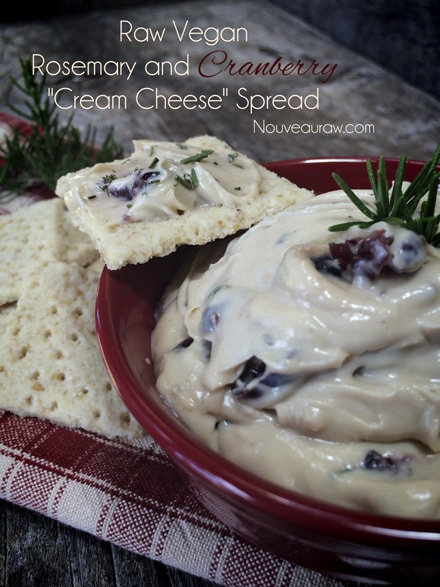

Rosemary and Cranberry “Cream Cheese” Spread

This spread is irresponsibly delicious, and I will not be held accountable should you become addicted to it. Just saying… :)
If you ever get bored with all things sweet or all things savory, try combining the two and get a whole new experience. I am not sure what prompted me to combine cranberries (sweet & tart) along with rosemary, but the end result came out quite amazing.
This Spring I planted some rosemary starter plants. I never knew how excited two small plants could make me feel, but now I wish I had planted a lot more! Rosemary is one of those wonderful herbs that makes a beautiful ornamental plant as well as a welcome culinary seasoning.
I won’t pretend to have a green thumb… it is still in training, but from what I am learning, rosemary plants suffer more from too much attention rather than too little. That is my kind of plant. :) I didn’t know this at the time but have since learned that rosemary can easily grow up to five feet tall?! I can’t recall ever seeing such a plant of that magnitude, but I can’t wait to see if mine ever gets that tall. At the rate that I am using it… I am doubtful.
If you can’t get ahold of fresh rosemary, you can use dried rosemary which can easily be found in your local grocery store. Two teaspoons of fresh rosemary will provide the equivalent flavor of one teaspoon of dried.
This “cream cheese” spread has a silky -smooth texture providing you have a good high-power blender. With soaked cashews and a good blender, you can make so many wonderful bases for recipes. If you can’t eat cashews, you can try skinned almonds or macadamia nuts since they are both blonde in color and more-or-less neutral in flavor.
To get that “cheese” flavor, I used probiotics, nutritional yeast, and chickpea miso. The probiotics give it that fermented flavor (gets stronger as it sits for a few days), the nutritional yeast will give it that hint of cheese flavor, and the chickpea miso will add in a little sweet and sour taste… together they all balance it out quite well. If you can’t find chickpea miso, you can use any miso of choice.
Enjoy this spread on crackers, on bread, in a sandwich or even with fresh dipping veggies. Enjoy!
Ingredients:
yields 3 cups
- 2 cups cashews, soaked 2+ hours
- 1/2 cup water
- 1/4 cup fresh lemon juice
- 1/4 cup + 1 tsp maple syrup
- 1 tsp nutritional yeast
- 1 tsp light chickpea miso
- 1/2 tsp Himalayan pink salt
- 1 tsp raw mesquite powder
- 1 tsp probiotic powder
- 1/4 cup diced dried cranberries
- 1 tsp minced rosemary
Preparation:
- After soaking the cashew, drain and rinse them before adding to the recipe.
- In a high-speed blender combine the cashews, water, lemon juice, agave, nutritional yeast, miso, salt, mesquite powder, and probiotics. Blend until completely smooth. This may take 3-5 minutes. It depends on the blender you use. You want to make sure that you don’t feel any grit from the cashews. We are aiming for a smooth and wonderful mouth feel!
- Pour the mixture into a glass bowl and allow it to sit with a towel covering it, in a warm place for 14 – 16 hours to culture.
- When finished culturing stir in the cranberries and rosemary then transfer to an airtight glass container and refrigerate for 4 hours or until set.
- This should keep for at least 5 days.
- This cheese is great on pieces of bread, crackers, as a veggie dip, as a spread on sandwiches, or it can be used as the cream base in cheesecakes and ice creams!
© AmieSue.com